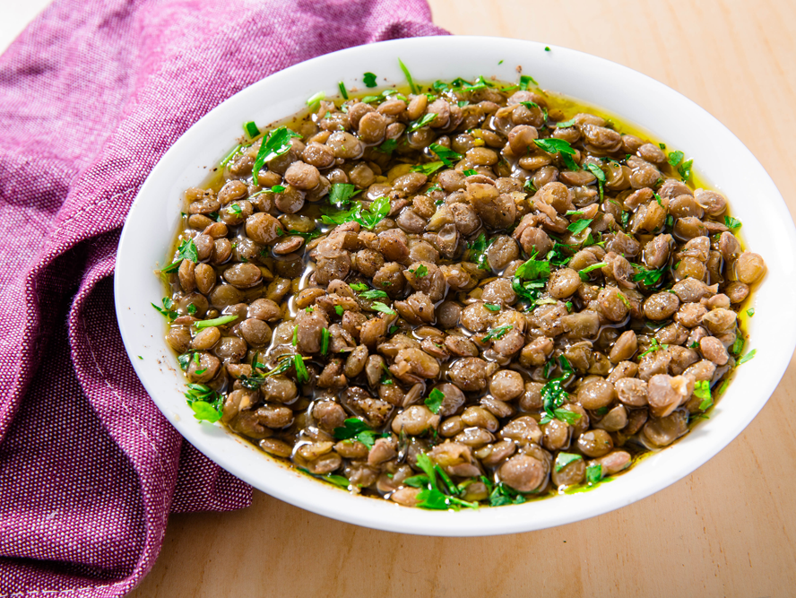

Lentils Recipe

Delicious lentils recipe!
Hello friends, in this recipe you will learn how to make delicious and most importantly easy and quick lentils.
i promise they dont take much work!! so i hope you leave this site with some extra delicous knowledge that you can put to use on your day to day life (:
Ingredients:
- 1 cup of lentils
- 2 cups of water filled all the way
- 1 to 2 big spoons of butter or oil
- 1 teaspoon of salt
- 2 teaspoons of pepper
- 2 to 4 teaspoons of your favorite spice
- 1 garlic clove
- 1 half an onion
Steps:
- first wash the lentils under running water for 1 minute
- on your pan add the oil or butter and turn the gas on low heat
- add the garlic to cook
- after the garlic is cooked add the lentils
- add all the spices you prepared and mix them together
- after everything is really mixed, wait for 1 minute
- add the 2 full cups of water to the pan
- now turn the gas on high heat until the water boils
- after the water is boiling, turn it to low heat
- this is when you will use the onion! cook the onion on a separate pan
- after the onion is cooked and looks soft and a bit darker,add it on top of the lentils
- now wait for around 20-30 minutes until all the water is gone
- most important step!! ENJOY, I HOPE IT'S DELICIOUS